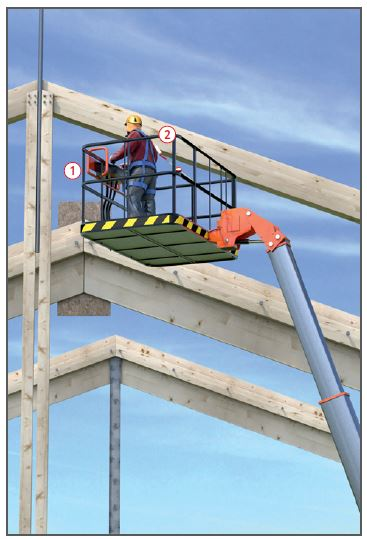

Montage von Holzbauteilen
|
|

Gefährdungen
- Bei Montagearbeiten von hochgelegenen Arbeitsplätzen aus, kann es durch fehlende Sicherungsmaßnahmen zu Absturzunfällen kommen.
- Bei unsachgemäßer Montage oder Lagerung können Personen durch umstürzende oder kippende Teile verletzt werden.
Allgemeines
- Sorgfältige Planung und Organisation sind wichtige Voraussetzungen für einen reibungslosen und sicheren Ablauf der Arbeiten.
- Betriebsanweisung erstellen und die Beschäftigen unterweisen.
Schutzmaßnahmen
Lagerung
- Bei Zwischenablagerung, Holzbauteile kipp- und rutschsicher absetzen.
- Sicherheitsabstand zu beweglichen Teilen, z. B. zu Kranen, einhalten.
Lastaufnahmeeinrichtungen
- Nur auf das Holzbauteil abgestimmte Lastaufnahmeeinrichtungen verwenden. Die Tragfähigkeit muss nachgewiesen sein.
Montage
- An der Baustelle muss eine Montageanweisung vorliegen. Sie muss Angaben enthalten über:
- Arbeitsplätze und Zugänge,
- Sicherung der Beschäftigten gegen Absturz,
- Schutz vor herabfallenden Gegenständen,
- Gewicht und Lagerung der Teile,
- Lage der Anschlagpunkte,
- Anschlagen der Teile an Hebezeuge,
- einzuhaltende Transportlage,
- erforderliche Hilfskonstruktionen, z. B. Aussteifungen, Abspannungen,
- Standsicherheit der Bauteile während der einzelnen Montagezustände,
- Reihenfolge der Montage,
- Reichweite und Tragfähigkeit der Hebezeuge.
- Hebezeuge mit geringer Hub- und Senkgeschwindigkeit verwenden.
- Sicherheitsabstände zu elektrischen Freileitungen einhalten.
- Holzbauteile vor dem Einbau auf Mängel überprüfen, die die Tragfähigkeit beeinträchtigen können.
- Nur an den vorgesehenen Anschlagpunkten anschlagen.
- Großflächige bzw. lange Holzbauteile mit Leitseilen führen.
- Holzbauteile vor dem Lösen der Lastaufnahmemittel so sichern, dass sie nicht umkippen, abstürzen oder sonst ihre Lage verändern können.
- Während der Montagearbeiten wechselnde Stabilitätsbedingungen berücksichtigen.
- Nicht an übereinander liegenden Stellen gleichzeitig arbeiten.
- Gefahrbereiche unterhalb der Montagestelle absperren und kennzeichnen.
- Werkzeuge und Kleinmaterial in Behältern mitführen.
Zusätzliche Hinweise für Arbeitsplätze und Verkehrswege
- Zusammenfügen und Befestigen der Holzbauteile von sicheren Standplätzen ausführen, z. B. von Arbeitskörben, Hubarbeitsbühnen
 und Plattform- und Stufenleitern.
und Plattform- und Stufenleitern.
- Absturzsicherungen vorsehen.
- PSA gegen Absturz nur verwenden, wenn Absturzsicherungen (Seitenschutz) aus arbeitstechnischen Gründen nicht möglich und Auffangeinrichtungen (Fanggerüste, Dachfanggerüste, Auffangnetze) unzweckmäßig sind.
- PSA gegen Absturz
 nur an geigneten Anschlageinrichtungen befestigen. Anschlagmöglichkeiten an Teilen baulicher Anlagen können zur Befestigung genutzt werden, wenn deren Tragkraft für eine Person von 9 kN einschließlich den für die Rettung anzusetzenden Lasten nachgewiesen ist.
nur an geigneten Anschlageinrichtungen befestigen. Anschlagmöglichkeiten an Teilen baulicher Anlagen können zur Befestigung genutzt werden, wenn deren Tragkraft für eine Person von 9 kN einschließlich den für die Rettung anzusetzenden Lasten nachgewiesen ist.
- Als lineare Anschlageinrichtung kann zum Einsatz von PSA gegen Absturz ein temporäres Lifeline-System zum Anschlagen des Verbindungsmittels montiert werden.
- Der Unternehmer oder ein fachlich geeigneter Vorgesetzter hat die Anschlageinrichtungen und -möglichkeiten festzulegen und dafür zu sorgen, dass die PSA gegen Absturz benutzt werden.
- Maßnahmen zur Rettung festlegen.
- Beschäftigte mit praktischen Übungen in die Verwendung von PSA gegen Absturz unterweisen.
- Bei Verkehrswegen zwischen einzelnen Geschossebenen sollten Bautreppen an Stelle von Leitern verwendet werden.
Arbeitsmedizinische Vorsorge
- Arbeitsmedizinische Vorsorge nach Ergebnis der Gefährdungsbeurteilung veranlassen (Pflichtvorsorge) oder anbieten (Angebotsvorsorge). Hierzu Beratung durch den Betriebsarzt.
07/2021